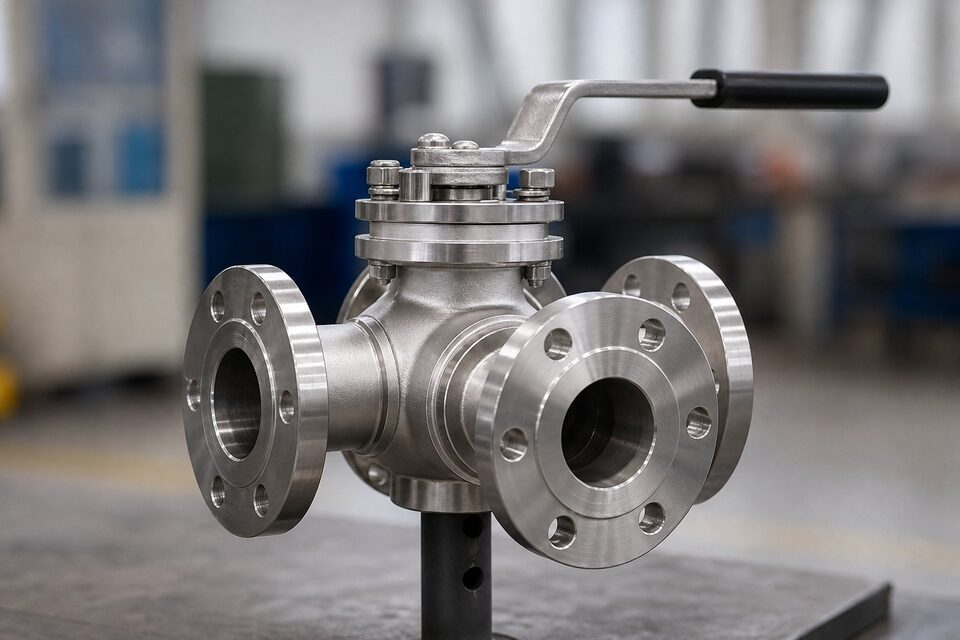

شیر سهراهه چیست؟
شیر توپی سهراهه دارای سه پورت است و بسته به شکل سوراخکاری توپ، دو پیکربندی اصلی دارد. این شیر برای مدارهایی کاربرد دارد که جریان باید منحرف، انتخاب یا ترکیب شود؛ کاری که با شیرهای دوپورت مستلزم چند شیر و اتصال اضافی است.

پورت ال: انتخاب بین دو مسیر
- سوراخکاری به شکل ال است و در هر وضعیت یک ورودی به یکی از دو خروجی وصل میشود.
- هیچ وضعیتی وجود ندارد که هر سه مسیر همزمان متصل باشند.
- کاربرد: انحراف جریان به یکی از دو تجهیزات، انتخاب منبع.
- وضعیت میانی معمولاً جریان را قطع میکند.
پورت تی: ترکیب و تقسیم
- سوراخکاری به شکل تی است و اتصال همزمان مسیرها ممکن میشود.
- میتواند دو جریان را ترکیب یا یک جریان را تقسیم کند.
- کاربرد: اختلاط سیالات، بالانس جریان در مدارهای فرعی.
- در برخی وضعیتها هر سه مسیر به هم متصلاند.
جدول مقایسه سریع
| ویژگی | پورت ال | پورت تی |
|---|---|---|
| عملکرد اصلی | انحراف و انتخاب مسیر | اختلاط و تقسیم |
| اتصال همزمان سه مسیر | ندارد | در برخی وضعیتها دارد |
| کاربرد رایج | انتخاب بین دو مبدل یا مخزن | ترکیب دو جریان |
| ریسک سفارش | ذکر نشدن پیکربندی | ذکر نشدن پیکربندی |
نکات انتخاب و سفارش
- پیکربندی پورت را صریحاً در سفارش ذکر کنید.
- جهت جریان و وضعیتهای مورد نیاز مدار را مشخص کنید.
- نوع عملگر (دستی یا اتوماتیک) را متناسب با مدار انتخاب کنید.
- کلاس فشاری و متریال را با خط هماهنگ کنید.
- در مدارهای حساس، وضعیتهای میانی و نشتی را ارزیابی کنید.
عملگر و اتوماسیون
شیرهای سهراهه به راحتی با عملگرهای پنوماتیک یا الکتریکی اتوماتیک میشوند و در مدارهای کنترلی برای تغییر مسیر خودکار کاربرد دارند. هنگام سفارش عملگر، وضعیتهای مورد نیاز مدار و رفتار در قطع انرژی مشخص شود تا شیر در وضعیت ایمن مناسب قرار گیرد.
کلاس نشتی و نشیمنگاه
- نشیمنگاه نرم، آببندی بهتری در دماهای متوسط میدهد.
- در دمای بالا، نشیمنگاه فلز-به-فلز بررسی شود.
- کلاس نشتی مطلوب را در سفارش ذکر کنید.
- برای سیالات فرار، الزامات نشتی سختگیرانهتر است.
نصب، بهرهبرداری و خطاهای رایج
شیرهای سهراهه وقتی درست نصب و پیکربندی شوند، چندین نقطه اتصال را با یک تجهیز جایگزین میکنند؛ اما چند خطای رایج در نصب و بهرهبرداری آنها وجود دارد که باید از ابتدا شناخته شوند. اولین خطا، نصب شیر با پورت نامتناسب نیاز فرایند است؛ همان طور که گفته شد، پورت ال بین دو مسیر انتخاب میکند و پورت تی امکان ترکیب یا تقسیم را میدهد. نصب پورت اشتباه، حتی اگر شیر به درستی کار کند، نیاز فرایند را برآورده نمیکند و این اشتباه معمولا در زمان راهاندازی کشف میشود، وقتی هزینه اصلاح بالاست. در سفارش، نوع پورت را با توجه به سناریوی واقعی جریان انتخاب و در برگه مشخصات مکتوب کنید. دوم، جهتگیری نصب است؛ در بسیاری از طرحها، موقعیت پورتها نسبت به خط اهمیت دارد و نصب چرخیده، مسیرهای جریان را جابجا میکند. علامتگذاری بدنه و نقشه باید قبل از نصب کنترل شوند. سوم، مساله عملگر است؛ در شیرهای سهراهه با عملگر، وضعیتهای ممکن معمولا دو یا سه حالت است و باید متناسب سناریوی فرایند تعریف شوند. اگر نیاز به توقف در وضعیت میانی دارید، همه طرحها این امکان را ندارند و باید از زمان سفارش ذکر شود. چهارم، نشتی بین مسیرهاست؛ در پیکربندیهایی که یک مسیر بسته و مسیر دیگر باز است، نشتی داخلی بین پورتها میتواند سیال را به مسیر ناخواسته ببرد؛ کلاس نشتی مناسب برای این سناریوها اهمیت دارد و در استعلام باید ذکر شود. پنجم، سیکلهای زیاد است؛ شیرهای سهراهه در کاربردهای جابجایی مسیر، معمولا سیکلهای بیشتری از شیرهای قطع معمولی دارند و انتخاب طرح با عمر مکانیکی مناسب و قطعات یدکی در دسترس، هزینه بلندمدت را کم میکند. در نهایت، در اتوماسیون این شیرها، وضعیت هر پورت را در سیستم کنترل نشاندار کنید تا اپراتور در هر لحظه بداند جریان از کدام مسیر عبور میکند؛ ابهام در وضعیت شیر سهراهه، یکی از دلایل رایج خطاهای عملیاتی است.
جمعبندی
شیر سهراهه ابزار قدرتمند مدارهای انحرافی و اختلاطی است؛ به شرطی که پیکربندی پورت درست انتخاب و در سفارش صریح شود.
سوالات رایج
پورت ال چه کاری انجام میدهد؟
مسیر جریان را بین دو خروجی منحرف میکند: در هر وضعیت فقط یک مسیر متصل است. کاربرد اصلی آن انتخاب بین دو مسیر است، مانند انحراف جریان به یکی از دو مبدل یا مخزن.
پورت تی چه کاری انجام میدهد؟
امکان ترکیب یا تقسیم جریان بین سه مسیر را میدهد. در برخی وضعیتها هر سه مسیر به هم متصل میشوند و برای اختلاط دو جریان یا تقسیم یک جریان کاربرد دارد.
خطای رایج در سفارش چیست؟
جابهجا گرفتن پورت ال و تی. چون ظاهر بدنه یکسان است، باید پیکربندی سوراخکاری توپ در سفارش صریح ذکر شود؛ نصب اشتباه، عملکرد مدار را مختل میکند.
آیا یک شیر سهراهه جای دو شیر معمولی را میگیرد؟
در بسیاری از مدارهای انحرافی بله؛ یک شیر سهراهه با عملگر مناسب میتواند جایگزین دو شیر و اتصالات میانی شود و نواحی نشتی احتمالی را کاهش دهد.
مطالب مرتبط
- راهنمای کامل شیرهای توپی
- شیر توپی (API 6D) — انواع و انتخاب
- مقایسه شیر توپی و دروازهای
- راهنمای انتخاب شیر بر اساس سیال
- راهنمای شیر زاویهای
با ذکر پیکربندی پورت (ال یا تی)، سایز، کلاس و نوع عملگر، شیر سهراهه با مدارک کامل عرضه میشود.
مشاهده صفحه محصول ← ثبت RFQ همین محصولتامین این تجهیزات را به پیشرو تجهیز فرتاک بسپارید
شرکت پیشرو تجهیز فرتاک تامینکننده تخصصی تجهیزات صنعتی برای پروژههای نفت، گاز، پتروشیمی، فولاد و نیروگاهی است. برای دریافت پیشنهاد فنی و قیمت، استعلام (RFQ) خود را ثبت کنید تا کارشناسان مهندسی فروش در کوتاهترین زمان پاسخ دهند.
- تامین شیرآلات صنعتیخانواده کامل شیر با گواهی مواد
- تامین تجهیزات پایپینگاتصالات هماهنگ با شیر سهراهه